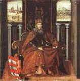

Ebben a félévben is egy darab (komplexebb) beadandót kell elkészítenetek, amely minden témakörbõl tartalmaz részfeladatokat.
Figyelem! Az elkészített feladatot a Netscape és az Internet Explorer böngészõvel is ellenõrízzétek le! (csak azokat a beadandókat fogadjuk el, amelyek mindegyikkel helyesen jelennek meg.)
Beadandó feladat a 2001/2002-es tanév 2. félévére:
A
beadandó elkészítése lépésrõl-lépésre:
1. lépés (index.html oldal elkészítése)
Készítsd el a képnek megfelelõen az index.html oldalt. Az oldal háttere a bg2.jpg kép legyen.
{kind=link}
{kind=link}
A táblázat tulajdonságai:
-
510 képpont széles
-
középre igazított
-
cellatávolság 0
-
cellabélés 4
-
háttérkép bg.jpg
{kind=link}
A Képzõmûvészet Magyarországon felirat legyen link, és mutasson a késõbb elkészítendõ frame.html oldalra, amely ugyanabban az ablakban jelenjen meg. Az oldal elkészítéséhez szükségesek a következõ képek:
| 1.jpg | 2.jpg |
|  | |
| 3.jpg | 4.jpg |
{kind=link}
{kind=link}
{kind=link}
{kind=link}
A Gipsz Jakab nevet írd át a saját nevedre, tegyél rá linket úgy, hogy ha rákattintunk, a saját email címedre tudjunk levelet küldeni. Úgy készítsd el az oldalt, hogy 5 másodperc múlva automatikusan betöltõdjön a frame.html oldal. Az oldalon található linkek színe legyen a #800000 kódú barna szín.
2. lépés (a menu.html oldal elkészítése)
Készítsd el az képnek megfelelõen a menu.html oldalt. Az oldal háttere a bg2.jpg kép legyen.
{kind=link}
A táblázat tulajdonságai:
-
középre igazított
-
120 képpont széles
-
cellatávolság 0
-
cellabélés 8
-
háttér: bg.jpg
-
keret: 1 képpont
-
A táblázat cellái legyenek középre igazítva
A Linkek felirat mutasson a (késõbb elkészítendõ) linkek.html oldalra, a Teszt pedig a teszt.html oldalra.
A táblázat alsó cellájában egy darab kép látható (zaszlok.gif), amelyen 2 zászló látható. (erre a képre a feladat legvégén egy kliens oldali térképet kell létrehozni)
{kind=link}
3. lépés (a bevezeto.html oldal elkészítése)
Készítsd el az képnek megfelelõen a bevezeto.html oldalt. Az oldal háttere a bg.jpg kép legyen.
{kind=link}
A felhasználandó szöveg:
Bevezetés (heading 1, balra igazítva)
Magyarországon - történelme során többször változó határai között - az európai mûvészettel erõs kölcsönhatásban lévõ, annak áramlatait mindig visszatükrözõ, de sajátos jegyekkel rendelkezõ képzõmûvészet jött létre. Ennek a mûvészetnek egyaránt részesei és alakítói voltak azok, akik - származásuktól függetlenül - az országban alkottak, valamint azok a magyar mûvészek, akik pályájuk jelentõs részét külföldön töltötték ugyan, de mûködésükkel befolyásolták a hazai fejlõdést. Nagy értékei ellenére a magyarországi képzõmûvészet alkotásai nem eléggé ismertek külföldön, de sajnálatos módon itthon sem... (vastag )
http://www.kfki.hu/keptar/ (vastag, jobbra igazított, legyen link)
4. lépés (frame szerkezet kialakítása)
Készítsd el az itt látható Frame-eket tartalmazó oldalt.
Ahogy az a képen is látható, az oldal 2 részre van felosztva. A képernyõ
bal oldalán lévõ rész 160 képpont
széles, és nem méretezhetõ át. A bal oldali frame neve legyen menu
(ebbe kerül a menu.html, a frameben a gördítõsáv soha ne
jelenjen meg. A jobb oldali frame neve legyen tartalom, a gördítõsáv itt csak akkor
jelenjen meg, ha
szükséges. A menu és tartalom frame kiterjedését ne
lehessen megváltoztatni. A keretek között ne legyen határvonal. Ha a menüben megjelenõ linkekre kattintunk,
az oldalak a tartalom framebe töltõdjenek be. A bal oldali
frameben a menu.html fájl legyen látható, a jobb oldaliban
pedig a bevezeto.html oldal.
5. lépés (teszt elkészítése)
Készítsd el az ábrán látható tesztet, teszt.html néven. Az oldal háttere a bg2.jpg kép legyen.
{kind=link}
A táblázat tulajdonságai:
- középre igazított
-
keret: 1 képpont
- szélesség: rendelkezésre álló hely 90%-a
- cellatávolság: 0
- cellabélés: 8
- háttér: bg.jpg
A kérdések a következõk:
Minek a rövidítése a MIÉNK?
Magyar Impresszionisták és Naturalisták Köre
Modern Impresszionisták és Naturalisták Köre
Magyar Impresszionisták és Neósok Köre
(Rádiógombokkal lehessen választani. A
csoport neve legyen "mienk" és a kiválasztástól függõen
vegye fel az a, b, c értéket)
Mit jelent a WestWerk szó?
(Egy 47 karakter szélességû,
"westwerk" nevû szövegmezõt helyezzetek el)
Jelöld meg Csontváry Kosztka Tivadar festményeit!
(A válaszokat egy legördülõ
menübõl lehessen kiválasztani. A neve legyen "csontvary",
5 sor látszódjon a képernyõn, legyen lehetõség a többszörös
kiválasztásra. A lehetséges válaszok és értékük:
Marokkói tanító ,a
Lovasok a Tengerparton ,b
Mária kútja Názáretben ,c
A Dégenfeld-család ,d
A meny megérkezése , e)
Mi a jellemzõje az expresszionizmusnak?
(Egy "expresszionizmus" nevû szövegdobozt helyezzetek el, ami 3 sorból áll, és 42 karakter széles.)
Az alábbi mûvészek közül ki kötõdött az expresszionizmushoz?
Mednyánszky, Csontváry, Vaszary, Barabás, Ferenczy, Csók I.
(A festõk közül checkboxok segítségével lehessen választani. A chexkboxok nevei legyenek a festõk nevei, kiválasztás esetén az "igen" értéket vegyék fel.)
Az ûrlap végén legyen egy Elküld és egy Töröl gomb. Az ûrlap neve legyen "teszt". Az ûrlap eredménye emailben továbbítódjon a saját email címedre.
5. lépés (linkek oldali elkészítése)
A linkek oldal a következõ képen látható.
{kind=link}
A táblázat tulajdonságai:
- középre igazított
-
keret: 1 képpont
- szélesség: rendelkezésre álló hely 90%-a
- cellatávolság: 0
- cellabélés: 8
- háttér: bg.jpg
A felhasználandó linkek:
|
|
|
Az oldal tetején látható Linkek
| Galéria | FTP helyek szövegekre kattintva az adott linkekhez
kerüljünk. A Vissza a tetejére szövegre kattintva az oldal tetejére
kerüljünk.
(Figyelem! Ez a funkció csak akkor mûkõdik, ha az oldal tartalma
nem fér ki a böngészõablakban. Hogy ki tudjátok próbálni, érdemes
üres paragrafusokat beszúrni a lap végére.)
6. lépés (kliens oldali térkép elhelyezése)
A menu.html oldalon elhelyezett zaszlok.gif képre kliens oldali térképet kell definiálni. Amennyiben a felhasználó a magyar zászló területére kattint, a teljes ablakba töltõdjön be a frame.html oldal, ha az angol zászlóra, akkor a (késõbb elkészítendõ) frameen.html oldal töltõdjön be.
7. lépés (az angol oldalak elkészítése)
El kell készíteni a menuen.html oldalt, ami (az egyszerûség kedvéért) csak annyiban különbözik a menu.html oldaltól, hogy a Linkek helyett Links, a Teszt helyett Quiz szöveg szerepel. A bevezet.html oldal mintájára el kell készíteni az angol nyelvû oldalt bevezeten.html néven. A felhasználandó szöveg:
Introduction
Within the often changing borders of Hungary during its history, fine arts developed in strong interaction with European art, and although they always reflected European tendencies, they retained a strong character of their own. All artists, irrespective of origin, who worked in the country, contributed to their formation. In addition, Hungarian artists who spent a significant part of their career away from the country but retained contacts with Hungarian art and artists, also participated in the development of fine arts in Hungary. In spite of the abundance of invaluable artworks, Hungarian fine arts are somewhat underrated outside the country...
A frame.html oldal mintájára el kell készíteni a frameen.html oldalt, ami csak abban különbözik az elõbbi oldaltól, hogy a menuen.html és bevezetoen.html oldalakat tölti be a frameekbe a menu.html és bevezeto.html oldalak helyett.. (az egyszerûség kedvéért a többi oldal angol verzióját nem készítjük el.)
8. lépés (tömörítés, elküldés)
Az így elkészült feladatot, képekkel
együtt kell elküldeni tömörített csatolt fájlként a htmlspeci@ludens.elte.hu
címre.
(Figyelem! A megoldott feladatot NE TEGYÉTEK FEL publikus
webszerverre! Amennyiben kiderül, hogy valaki másolta a beadott
feladatát, nem kaphat jegyet.)
A felhasznált képeket itt egyben letölthetitek. (kepek.zip)
A beadási
határidõ: 2002. Május 3. (Péntek) 24:00